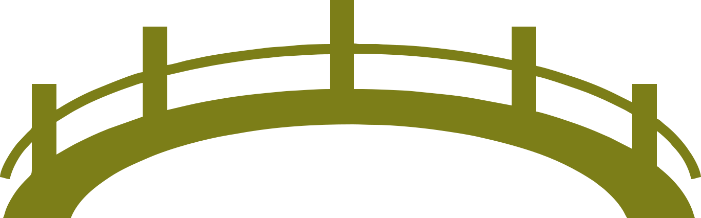

Donate
help us build the bridge across the Yuat River

AT Projects, a construction company based out of Goroka, Papua New Guinea,
has agreed to manage the construction of the Baby Jared Bridge. AT Projects
specializes in engaging with rural communities to increase their quality of
life through building projects such as this. On May 16th, 2024, a team of
engineers surveyed the land where the bridge will be built. The current quote
for this building project, including the transportation of materials to the
remote Yuat river, is $200 000 AUD. If these funds can be raised by the end
of June 2024, construction will begin during the dry season of July-August 2024.